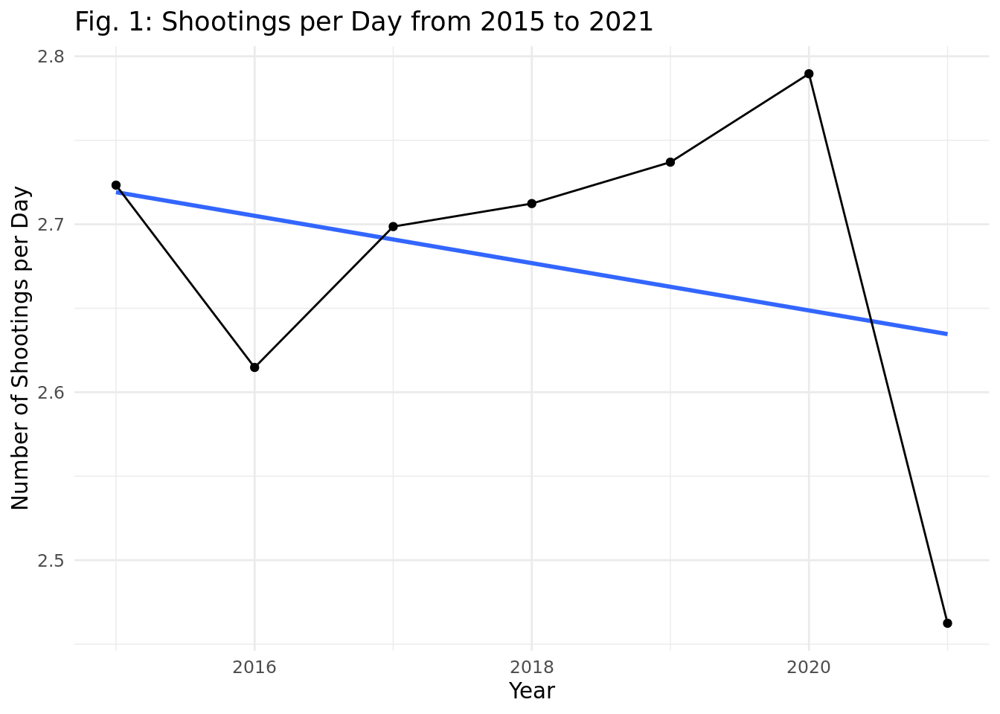
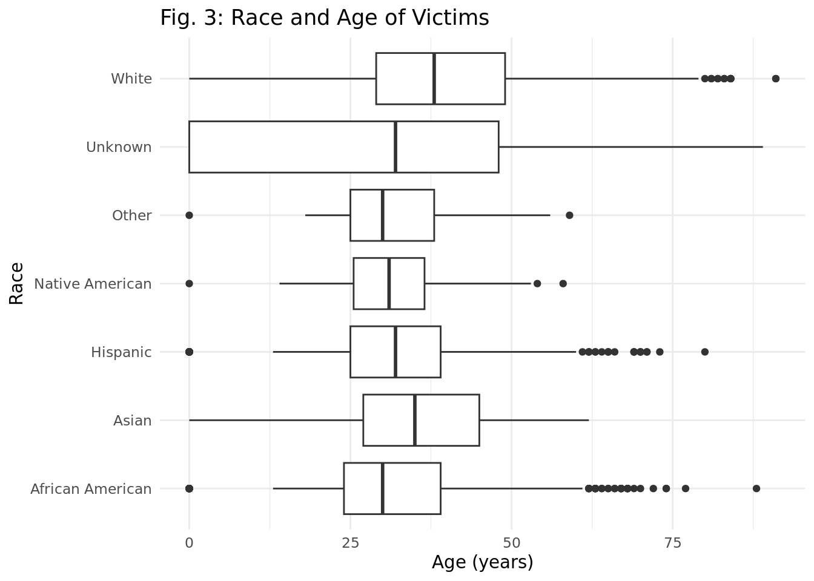

Rows: 6569 Columns: 16
── Column specification ────────────────────────────────────────────────────────
Delimiter: ","
chr (9): Person.Name, Person.Gender, Person.Race, Incident.Location.City, I...
dbl (4): Person.Age, Incident.Date.Month, Incident.Date.Day, Incident.Date....
lgl (2): Factors.Mental-Illness, Shooting.Body-Camera
date (1): Incident.Date.Full
ℹ Use `spec()` to retrieve the full column specification for this data.
ℹ Specify the column types or set `show_col_types = FALSE` to quiet this message.
**everyone in this data frame has mental illness. possible misidentification; this is a problem as it could potentially help the policemen
Introduction
# Data 2 (Police Shootings)
This data is from the CORGIS Dataset Project and was created in 9/15/2021. The data was compiled from the Washington Post.
The Washington Post regularly collects this data as police shootings happen. The Post collected the data by looking at local news reports, law enforcement websites and social media, and by monitoring independent databases such as Killed by Police and Fatal Encounters. In necessary cases, the Post did additional research.
This data set collects data on fatal shootings in the United States by a police officer in the line of duty from Jan. 1, 2015 to Sept. 11, 2021. This data includes gender, race, mental illness, location, and date. Each observation represents a fatal shooting event by a police officer.
Research question
How do race, gender, and whether they were armed or not affect rates of police shootings over time across the United States?
Our dataset includes 6570 rows meaning that at least 6570 people were killed by police from 2015 to 2021. By discovering how different factors affect the number of shootings, we can begin to understand why these tragedies happen, and what we can do to stop them from happening.
The research topic looks at the correlation between race, gender, and age and police shooting rates. We would expect that male individuals of minority communities with previous mental illnesses would be more likely to be affected.
One ethical concern is the possibility of misinformation in the data and a lack of accurate reporting. Not every police shooting is reported or is handled correctly. Although the Washington post collected the data from many different sources, there is no way of guaranteeing that the data set is perfect. Another concern is consent and whether the victims families want their loved ones to have identifying information (like their name and information about their death) in a public database. It is a very sensitive topic and should be treated as such.
- Identify the types of variables in your research question. Categorical? Quantitative?
In yearly-analysis, we chose to do a line graph to best represent the progression of shooting per day over time as it effectively reveals trends and changes in shooting per day across the years.
# Shootings per yearyearly_shootings <- police_shootings |>group_by(Incident.Date.Year) |>count(Incident.Date.Year) days_in_year <-c(365, 366, 365, 365, 365, 366, 253)yearly_shootings |>ggplot(aes(x = Incident.Date.Year, y = n/days_in_year)) +geom_point() +geom_line() +labs(title ="Fig. 1: Shootings per Day",x ="Year", y ="Number of Shootings")

Linear Regression model
EXPLAIN ARMS STATUS METHODOLOGY
police_shootings |>filter(Factors.Armed !="unknown") |>mutate(Factors.Armed.Test =if_else(Factors.Armed =="unarmed"| Factors.Armed =="toy weapon", "unarmed", "armed with weapon")) |>ggplot(aes(x = Person.Gender, fill = Factors.Armed.Test)) +geom_bar(position ="fill") +labs(title ="Fig. 2: Arms Status of Victims by Gender",y ="% of Victims",x ="Sex",fill ="Arms Status")
# Armed with weapons include toy weapons...
We used box plots to visualize male versus female and race as it is the best way to show distributions of numeric data values between multiple groups. It made the differences in age between male and female victims and victims of different races very clear. We could compare median, range, and outliers.
police_shootings |>ggplot(aes(x = Person.Age, color = Person.Race)) +geom_boxplot() +labs(title ="Fig. 3: Relationship between Race and Age",x ="Age",y ="Count",color ="Race")

police_shootings |>ggplot(aes(x = Person.Age, color = Person.Gender)) +geom_boxplot() +labs(title ="Fig. 4: Relationship between Sex and Age",x ="Age",y ="Count",color ="Sex")
We decide not to make a visualization based on the mental illness variable. We believe this would pose an ethical issue because mental health is a spectrum. Having a mental illness cannot be reduced to a simple “Yes” or “No”. There were many other variables that we decided would be a better focus.
Results
Based on our summary statistics for the entire data set, we observed that the mean and median age of shooting victims is 35.4 and 34.0 years, respectively. Moreover, the standard deviation of this age range if 14.9 years, demonstrating the wide spread of data points included.
Figure 1 shows a slight decrease in shooting per day in 2021 though the total range of average shootings per day was from roughly 2.45 shootings to 2.8 shootings.
Figure 2 looks at the arms status of victims by gender. This figure shows that female victims were more likely to be armed than male victims. One reason for this is that male victims could have been seen as more aggressive and therefore more likely to become a victim no matter if they were armed.
In Figure 3, we can see that the age distribution of victims does no vary much between races. But if we look at the number of different races in the count of total victims, we can see white victims and african american victims were most common.
police_shootings |>ggplot(aes(x = Person.Race, fill = Person.Race)) +geom_bar() +labs(title ="Fig. 5: Number of Victims by Race",x ="Race",y ="Count",fill ="Race") +theme(axis.text.x =element_text(angle =90, vjust =0.5, hjust=1), legend.position ="none")
As seen by Figure 4, the medians for female and male age are roughly 34 years old for male and 35 years old for female. Male victims differ by their outliers, as many male victims are over the age of 75. The unknown victims appear to be significantly younger as seen by the median of ~21 years old.